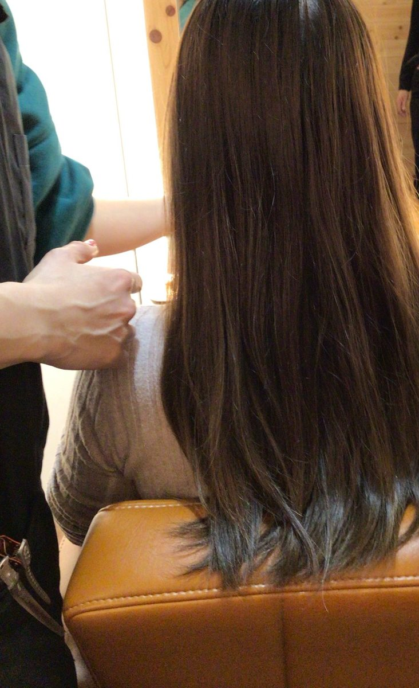
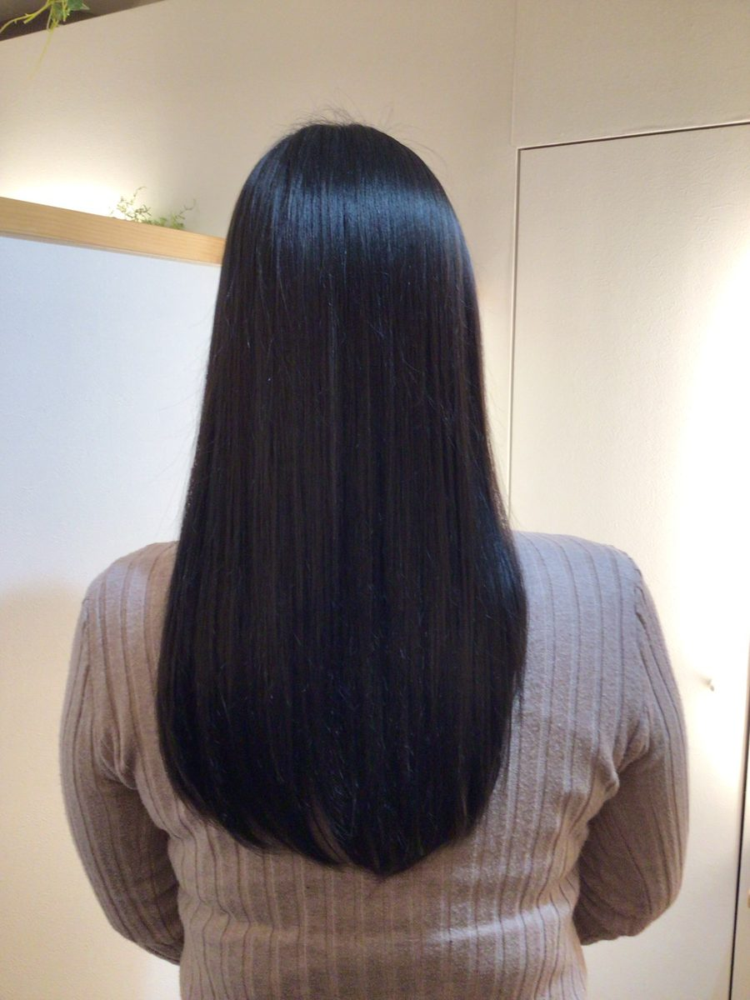
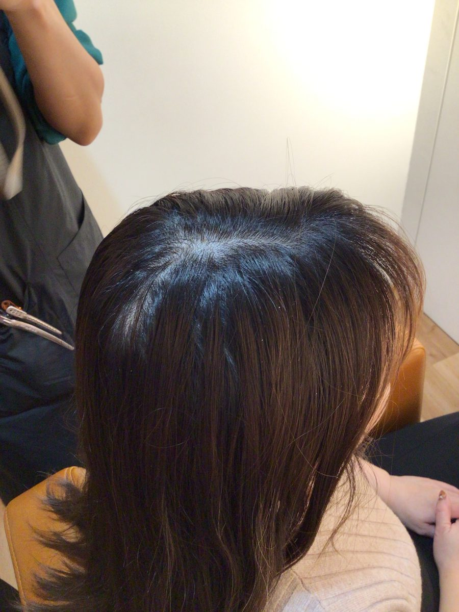
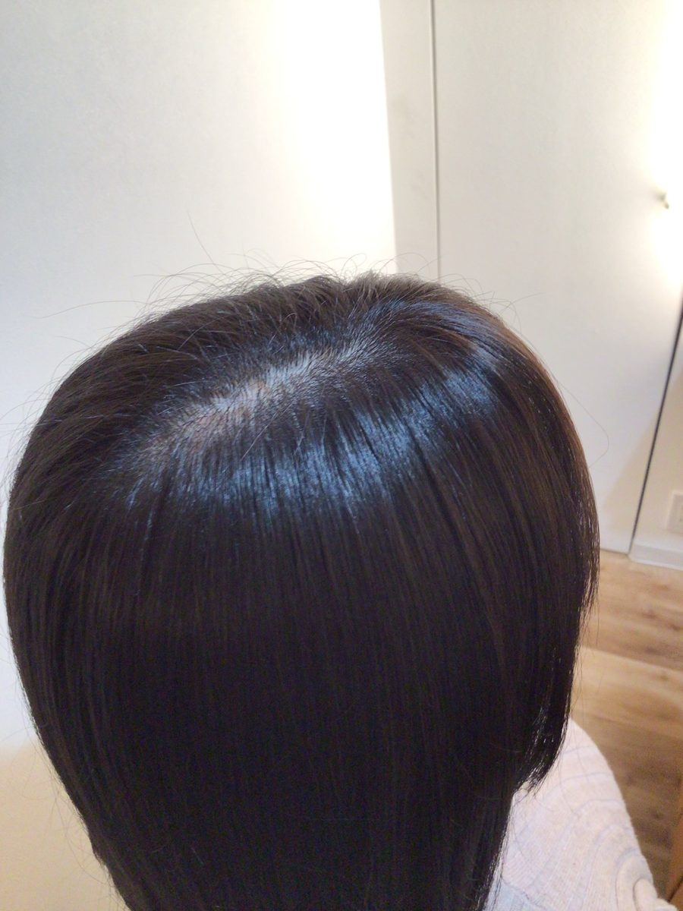
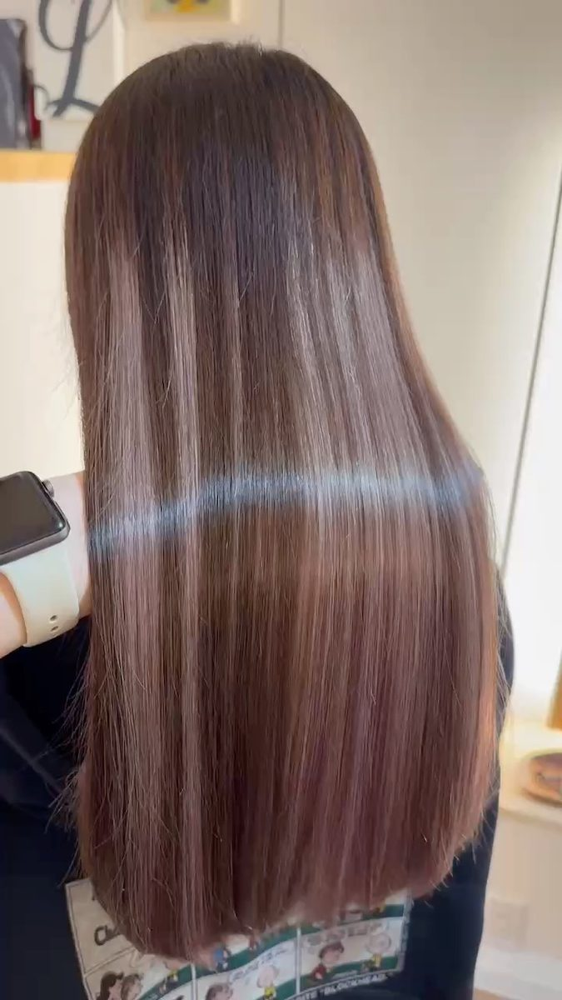
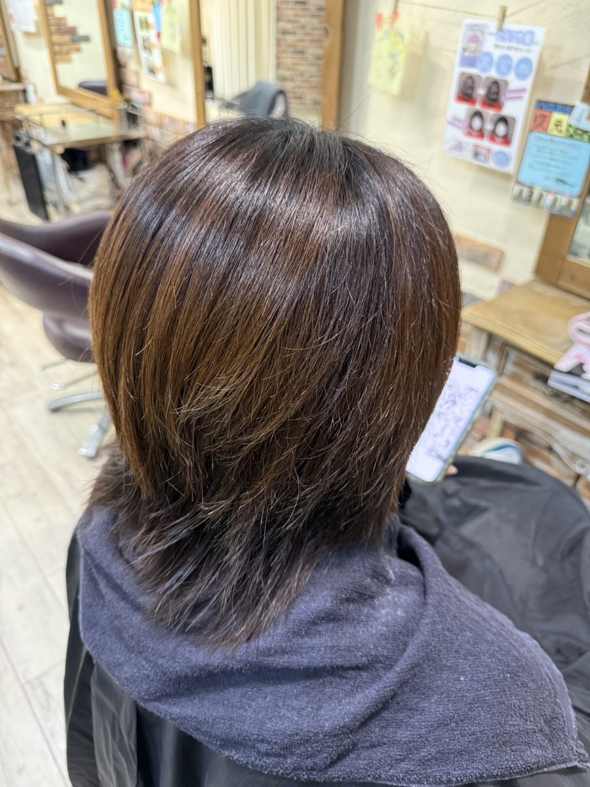
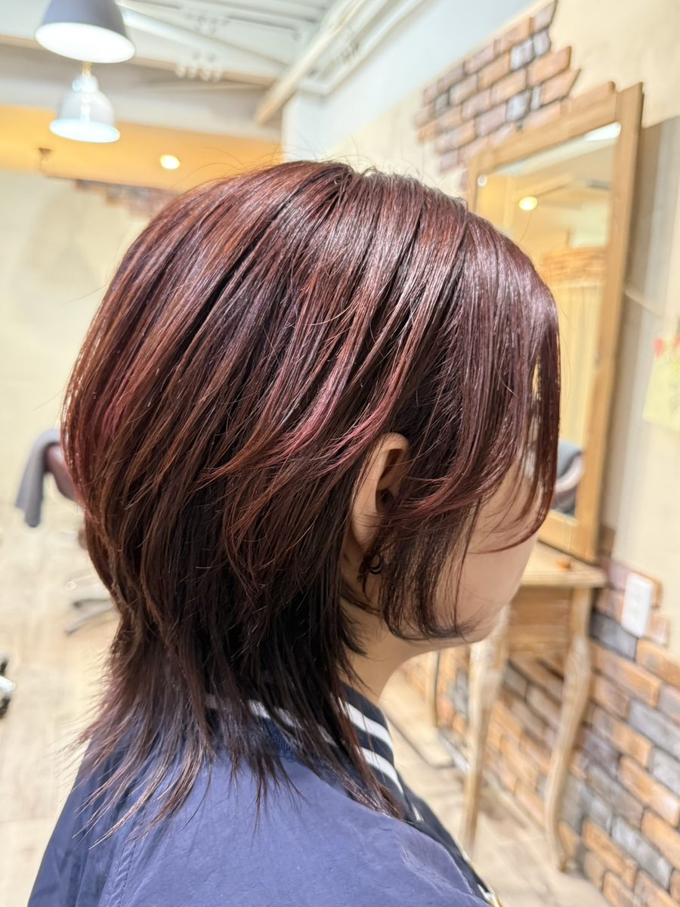
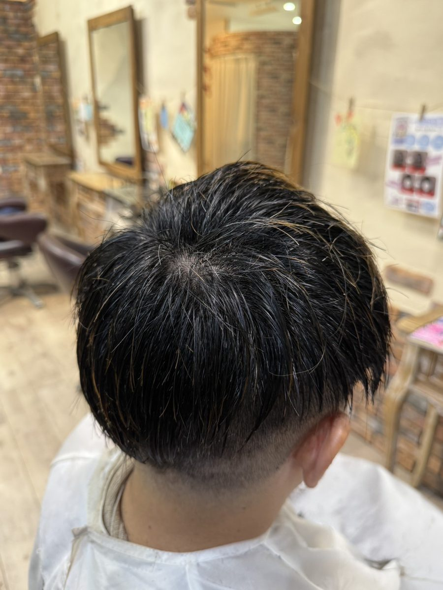
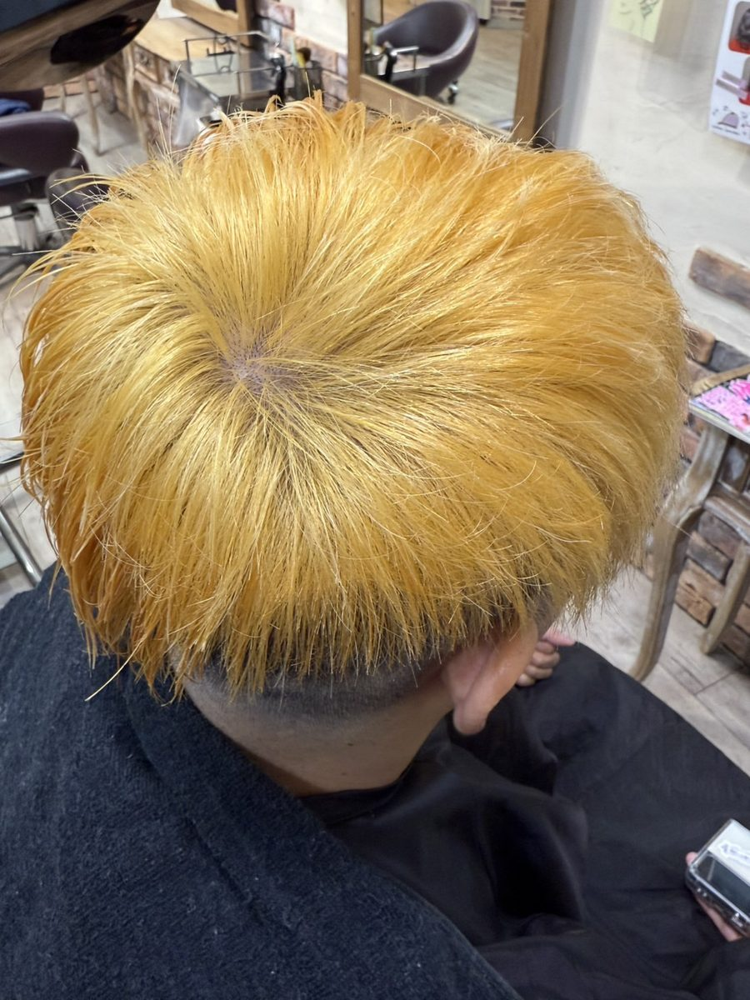

01
りふれカラー




髪やお肌の、毎日のお手入れに。
ふだんのヘアケア・スキンケアに取り入れやすい使い方です。
髪にスプレーしてから、ドライヤーで乾かして。
朝の身だしなみに。ブラシにつけて、髪の寝癖を整える際の水として。
お使いのスタイリング剤と混ぜて。
シャンプーやトリートメントを、りふれウォーターと半々で混ぜて使う方法も紹介されています(混ぜる割合はシャンプー剤によります)。
洗顔時の泡立てや、クレンジングの乳化時に。
お気に入りの化粧品の前に。化粧品と混ぜても。
洗顔後のお手入れや、顔・身体の拭き取りなど、お肌の清潔ケアの使い方をまとめています。
りふれは、美容室のカラー施術の工程でも使用されています。実際の施術例で、仕上がりのツヤや質感がわかる写真です。





実際の美容室での使用例と、現場からいただいた声です。


今までよりも付けやすかった。
仕上がりの毛先の柔らかさ、指通りが違いました。
すごく良かったです。
美容室でのご利用


りふれすると、ブリーチしなくてもカラーがキレイに入りました!!
美容室でのご利用


メンズなんですけど、ブリーチで抜いても今まで2回やらないとここまで抜けなかった人が、一発でここまで抜けました。色も綺麗に入りました。
美容室でのご利用
※お客様の声は個人の感想です。髪の状態・施術内容などによって、感じ方や仕上がりは異なります。
掲載内容は実際の使用例・使用者の感想を含みます。使用環境・使用方法等により感じ方や結果は異なります。
施術への取り入れ方は、企業様向けの「美容サロン」でご紹介しています。